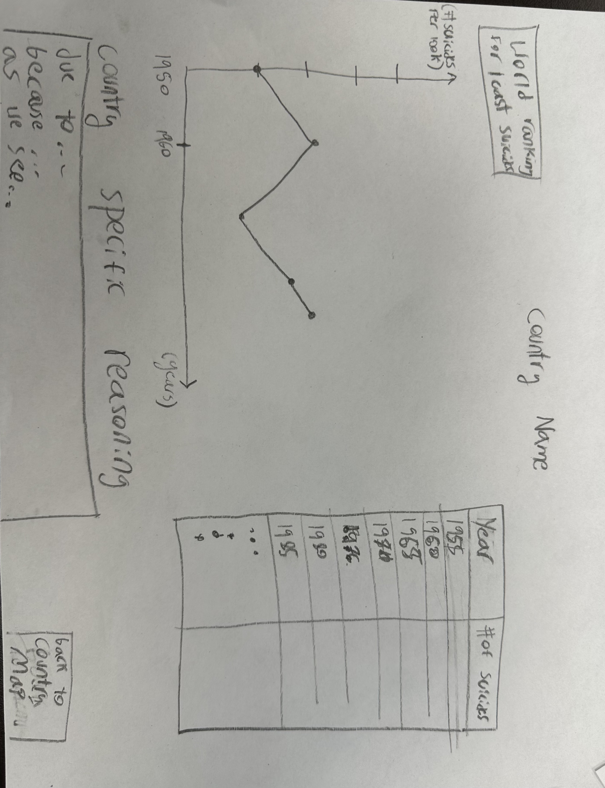
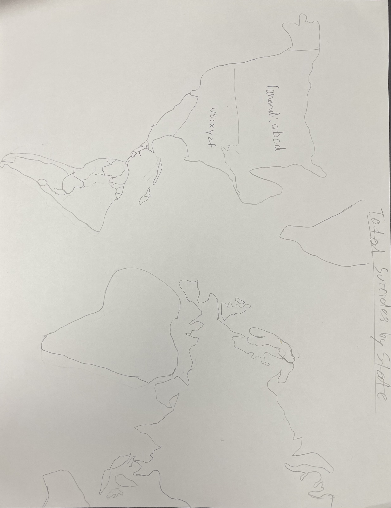
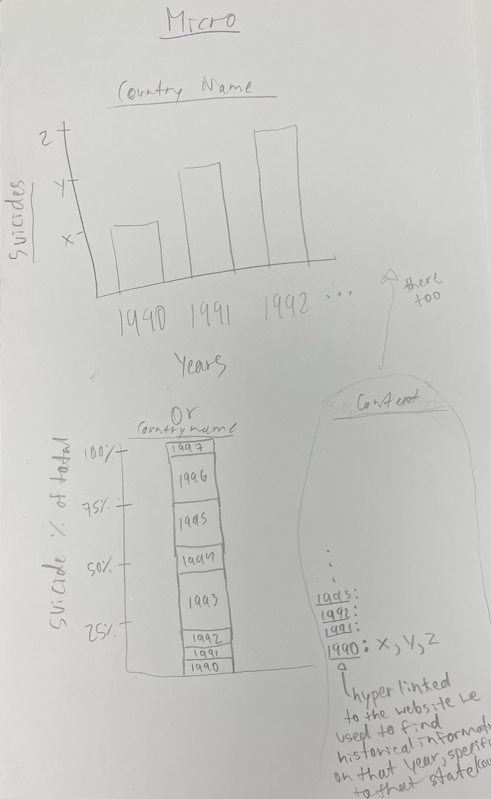
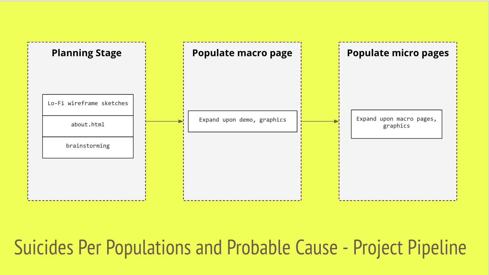

Suicide rates are defined as the deaths deliberately initiated and performed by a person in the full knowledge or expectation of its fatal outcome.
Evaluation of wireframe:
Elements selected:
Evaluation of wireframe:
Elements selected:
Modeling- Lacked good modeling because parts of some countries were missing due to bad spacing.
Visibility- Almost all elements needed are seen, with the exception of some countries. It's easy to read./p>
Consistency- Uses well known map of the world for easy comprehension.
Structure- The labels are on top or next to their respective countries which makes good structure.
Simplicity- Minimal use of words; efficiently conveying the information needed.
Documentation- The labels would help serve as documentation.
Discoverability[signifiers]- Forgot to add a drop down menu and text indicating they can click each country for its micro.
Usability[ease]- Would need the drop down menu for better usage without fatigue of finding the country.
Cultural[privacy]- The rates are related only to countries and not specific cities or neighborhoods, so privacy is ensured.
Labeling on the countries with their name + ":" + rate.
Modeling- Good labeling and modeling.
Visibility- Almost all elements needed are seen, with the exception of a return button./p>
Consistency- Lables are consistent with common graphs.
Structure- Infirmation about the cause is on the side, making teh viewer see teh graphs first and then the possible reasoning.
Simplicity- Minimal use of words; efficiently conveying the information needed.
Documentation- The labels would help serve as documentation.
Discoverability[signifiers]- Forgot to add a return button so the user can easily go back to the macro.
Usability[ease]- Graph choices are impratical for easy readibility.
Cultural[privacy]- The rates are related only to countries and not specific cities or neighborhoods, so privacy is ensured.
Hyperlinking the websites we will get our information from for the probable causes.
We first brainstormed on what topic we wanted to cover and then looked to find csv files we could use.
We made our sketches of what we wanted the website to look like and discussed the pros and cons to each design.
Evaluated the designs with the Design principles and see if we missed anything during our discussion of the pros and cons.
Created the about.html page and reflected on how we should approach creating our website and our division of labor.
stuff